.png)
O Re-ciclo é uma plataforma inovadora de economia circular desenvolvida pela Prefeitura de Fortaleza. O projeto atua na logística de coleta seletiva porta-a-porta, utilizando micromobilidade sustentável (triciclos elétricos) para conectar cidadãos e empresas às associações de catadores. Atuei como UX/UI Designer, fazendo parte do time que foi responsável por traduzir um modelo de serviço público complexo em uma interface simplificada, focada em promover a inclusão socioeconômica dos catadores e elevar o índice de reciclagem da capital cearense.
Product Designer (UX/UI)
O maior desafio técnico foi a heterogeneidade dos usuários. Precisamos projetar um ecossistema que atendesse simultaneamente a três realidades: o Catador (que opera em campo e exige baixíssima carga cognitiva, ou seja, sistema complexo que prejudique seu trabalho), o Cidadão (CPF) (que busca conveniência extrema) e a Empresa (CNPJ) (que necessita de previsibilidade e comprovação de impacto). Nossa missão foi unificar essas necessidades em um fluxo contínuo, onde o agendamento fosse realizado em segundos e a gestão logística fosse transparente e eficaz.
Foi entregue um projeto de experiência end-to-end, composto por: User Flows específicos para cada tipo de perfil, Protótipos de alta fidelidade validados para uso em dispositivos móveis, e uma estrutura de Arquitetura de Informação que organiza o agendamento, o rastreio da coleta e a destinação correta dos resíduos. O foco foi garantir que o sistema não tivesse barreiras de entrada, estimulando a adoção da cultura de reciclagem em toda a cidade.
Foi utilizada uma linguagem visual clara, tátil e amigável. A interface foi desenhada com componentes de alta acessibilidade, como botões grandes e ícones autoexplicativos, fundamentais para o uso do catador durante a rota. A paleta de cores e a iconografia foram pensadas para comunicar sustentabilidade e modernidade, transformando a interface e fluxos de usuários finais em jornadas legítimas de confiança e organização.
Trabalhei em colaboração próxima com a equipe de engenharia para garantir a viabilidade técnica do design. Estruturei os arquivos para um handoff sem atritos, fornecendo um Design System documentado que facilitou a implementação do front-end e a integração com o painel administrativo em Django.
.png)
Inclusão da Base da Pirâmide. Ao formalizar e facilitar a coleta via triciclos elétricos, o projeto removeu o estigma social e o esforço físico exaustivo, garantindo uma fonte de renda estável e o reconhecimento desses profissionais como agentes ambientais essenciais para Fortaleza.
Aprendi que a tecnologia sozinha não recicla nada; o design precisa motivar. Usar elementos de gamificação (como o conceito 'Reciclou, Ganhou') foi fundamental para transformar uma tarefa chata em um hábito prazeroso e recompensador para o cidadão.
Viabilidade da Economia Circular.Estrategicamente alinhado à Lei de Incentivo à Reciclagem (14.260/21), o projeto contribuiu para um ecossistema capaz de captar investimentos massivos (com projeções de R$ 140M), provando que o design sustentável é altamente rentável.
Projetar para o catador me ensinou sobre usabilidade em condições adversas. A interface precisa ser legível e tátil o suficiente para ser usada rapidamente durante as rotas. Simplicidade aqui não é estética, é ferramenta de trabalho.
Redução de Resíduos em Aterros. Através de uma interface focada em agendamento rápido, potencializamos a aplicação da Política Nacional de Resíduos Sólidos (PNRS). A facilidade de separação e coleta porta-a-porta aumentou o índice de reciclagem municipal, preservando recursos naturais e transformando o que seria "lixo" em novos insumos industriais de forma escalável.
Este projeto me ensinou a projetar fluxos que atendem simultaneamente às exigências burocráticas do governo (Pessoa Jurídica/Lei) e à necessidade de conveniência do usuário comum (Pessoa Física), unificando interesses distintos em uma única jornada fluida.
Para construir O sucesso do Re-ciclo depende da harmonia entre três atores fundamentais. Para projetar uma solução que realmente transformasse a gestão de resíduos em Fortaleza, mergulhamos no dia a dia do Afonso (a força operacional que busca dignidade), do Marcelo (o cidadão que busca conveniência) e da Júlia (o negócio que busca eficiência logística). O desafio do design foi criar uma interface que eliminasse a fricção entre esses perfis, garantindo que a tecnologia atuasse como o elo invisível que transforma descarte em valor social e ambiental.
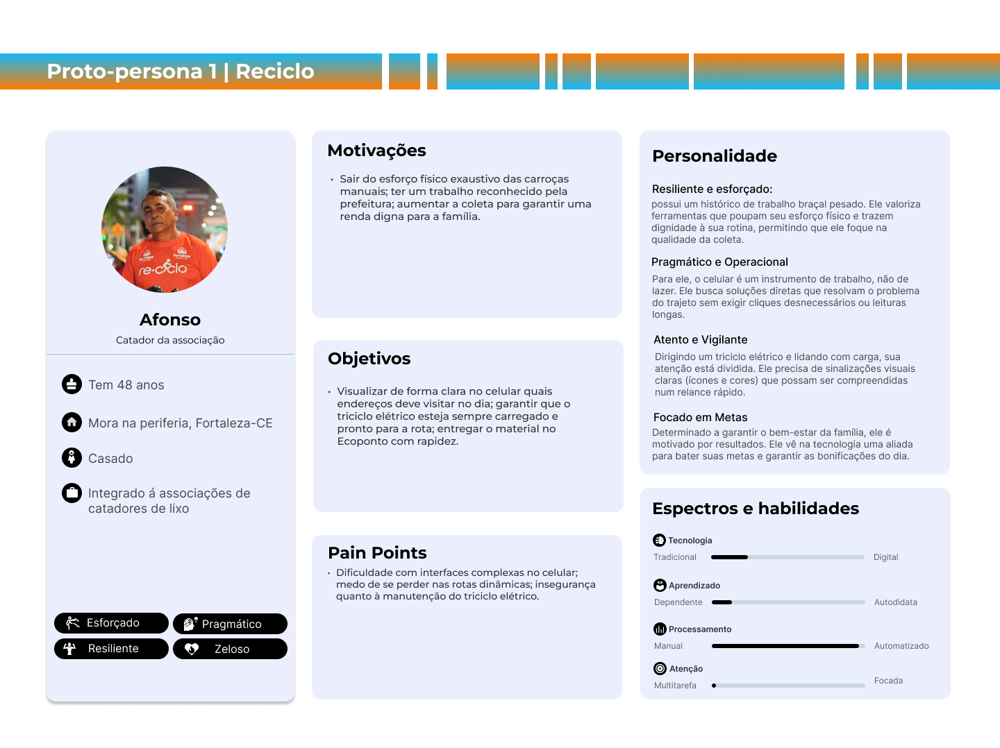
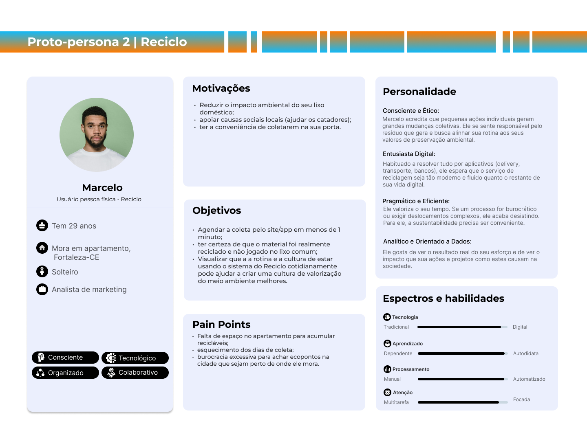
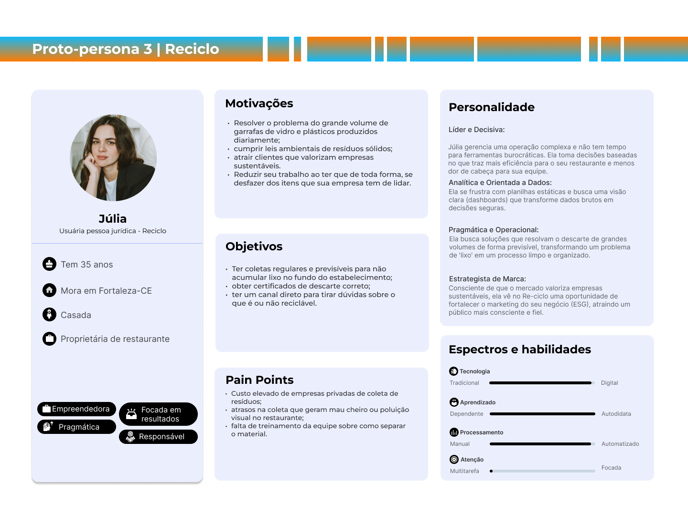
O sitemap do Re-ciclo foi projetado para simplificar a jornada do descarte sustentável. Estruturamos a navegação em módulos que primeiro educam o usuário ("Conheça") para depois facilitar a ação direta ("Participe"). A segmentação entre Pessoa Física e Jurídica no fluxo de acesso é fundamental para garantir que as funcionalidades operacionais sejam personalizadas para cada perfil, otimizando a logística de coleta e a experiência de gestão de resíduos.
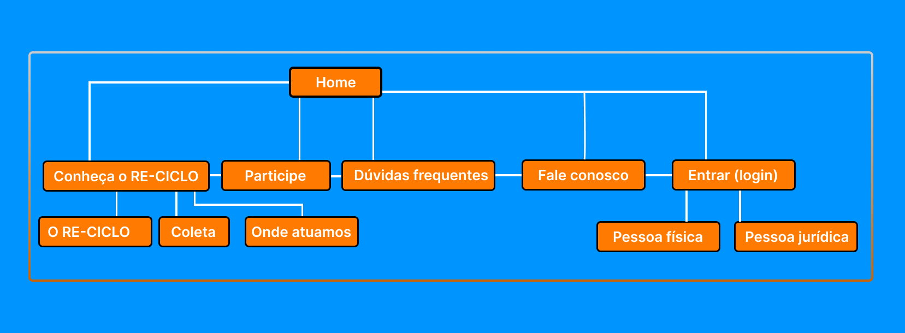
O veredito visual do Re-ciclo é a modernização da sustentabilidade. Através de uma tipografia amigável e uma paleta cromática diversificada, criamos uma interface que comunica energia e responsabilidade social. O foco esteve na criação de uma linguagem visual proprietária, onde a iconografia detalhada e os componentes arredondados convidam o usuário à ação, fortalecendo a cultura da economia circular através de um design centrado no ser humano e na eficiência operacional.
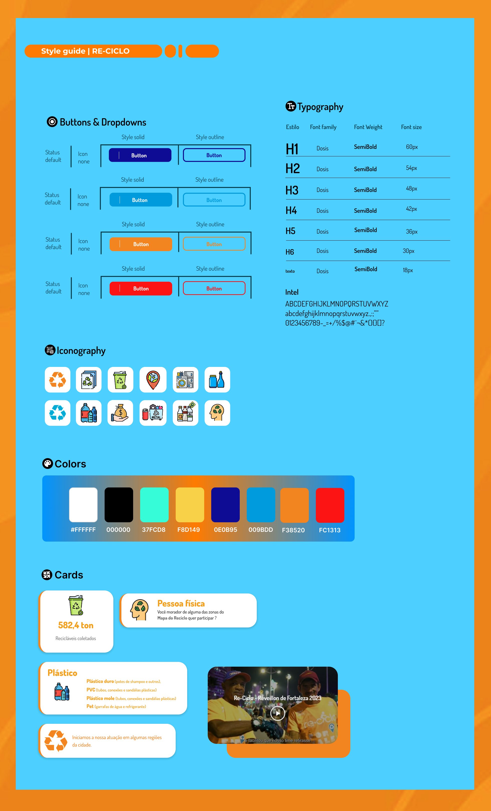
A etapa de alta fidelidade para desktop foi projetada para ser o centro de controle da reciclagem em Fortaleza. O foco principal foi a consolidação de dados e transparência: criamos dashboards que exibem métricas reais de impacto social e ambiental (tonelagens coletadas e renda gerada).
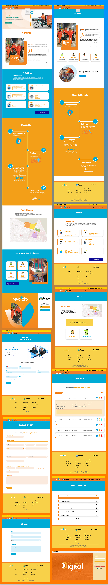
O design mobile do Re-ciclo foi concebido sob a premissa da baixa fricção e usabilidade tátil. Para o cidadão comum, o fluxo de agendamento foi otimizado para ser concluído em poucos toques, eliminando barreiras cognitivas.
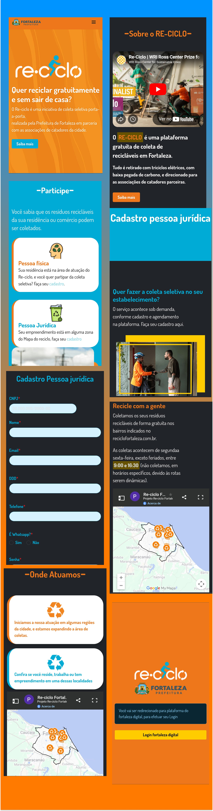
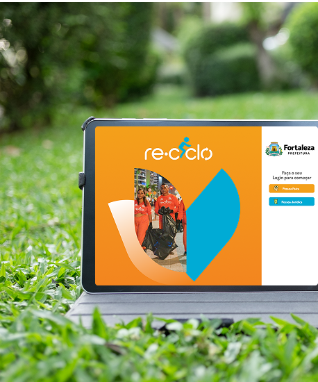
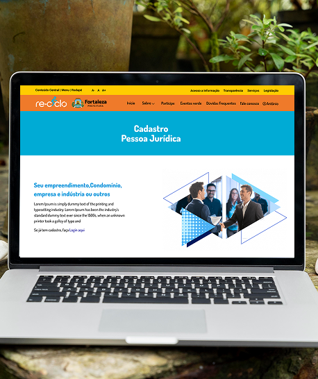
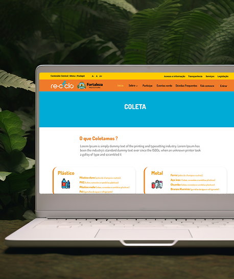
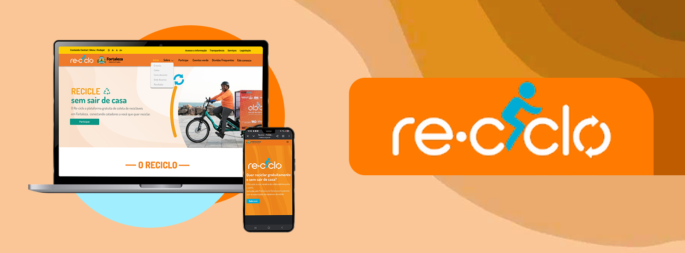
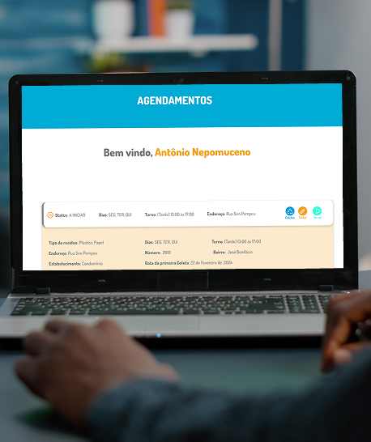
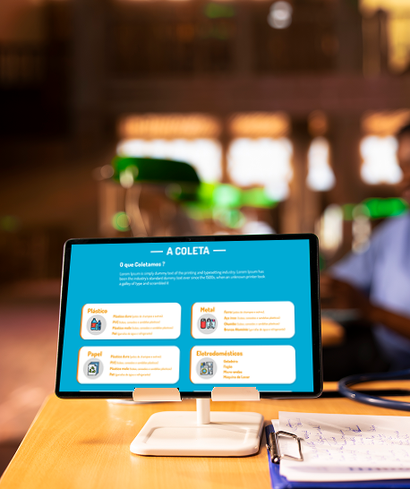
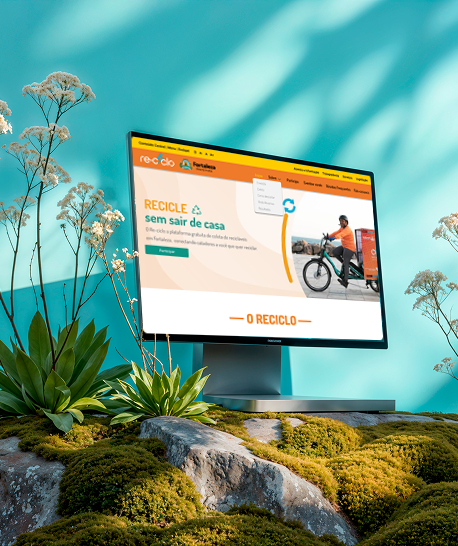